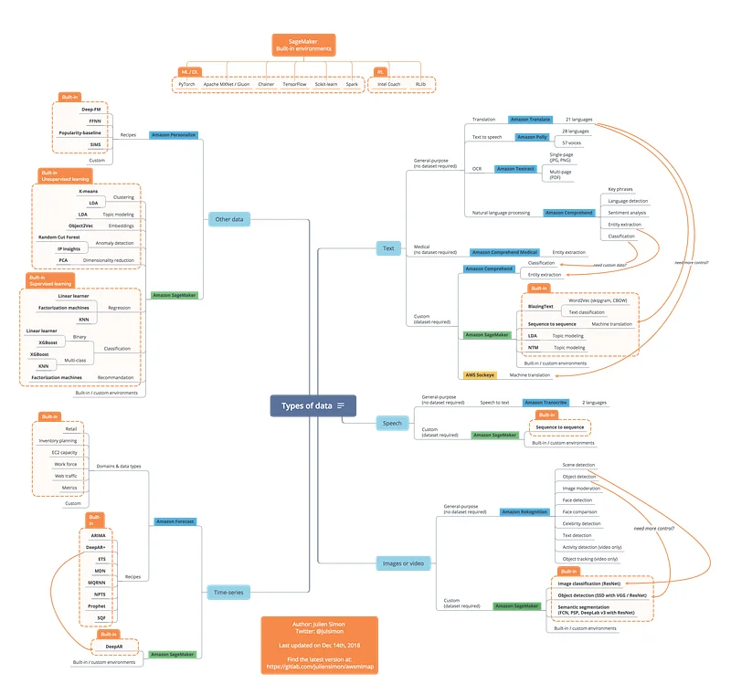

*** December 2019 version here! ***
A map for Machine Learning on AWS
It looks like Christmas is a little early this year ;) Here’s a little something from me to all of you out there: a map to navigate ML services on AWS. With all the new stuff launched at re:Invent, I’m quite sure it will come in handy!
This is very much work in progress (I’d like to add SparkML, etc.), and the latest version will be available on Gitlab: https://github.com/juliensimon/awsmlmap
Update Dec. 18th: I added a second map focusing on deployment.
Let me know what you think… and have a great Christmas!
